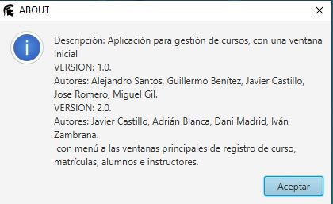

SOBRE NOSOTROS
En este apartado mostraremos la funcionalidad del botón “Acerca de” que podemos encontrar en el menú principal de la aplicación.
Al hacer click en este botón se abrirá una nueva ventana que nos brindará una breve descripción de la aplicación, información sobre los desarrolladores y notas de versión. También dispondremos de un botón "Aceptar" que cerrará la ventana.
